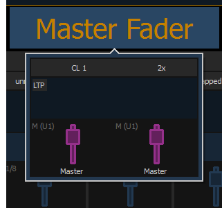

Click or tap Master Fader to open the master fader configuration window.

This setting allows you to map a cue list to a fader.
This sets the number of the target assigned to the fader, such as cue list 2. For a list of available Target IDs, click or press the {...} button beside ID.
Element 2 can only map to cue list 1.
This setting default to Yes and applies to cue lists. When a fader is discrete, it will track other faders that are running the same cue list, BUT if a fader that is tracking manually changes to a different cue list, a discrete enabled fader will not change its content. When set to No (or disabled), once a fader is in sync with another fader running the same cue list, it will stay in sync when content is changed. Discrete disabled is noted in the fader ribbon with a link icon.
Master fader is set to a size of 2 faders and cannot be changed.
You can select to use default mapping for the fader, or you can use local mapping.
Note: When a user first joins a session, the master fader is unmapped. Once a cue list is established for that user, any other devices joining the user group will have the same cue list automatically mapped to their master. If a device changes its user ID, the cue list on the master will be remapped accordingly.
Additional configuration options are available. Please see Cue List Properties for more information.